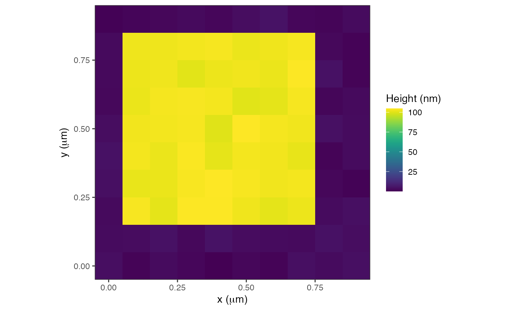

generates an AFMdata object, which is sometimes useful for testing algorithms or models or to explore AFM data numerically.
AFM.artificialImage(
width = 10,
height = 10,
minZ = 0,
maxZ = 100,
imageWidth = 1000,
imageHeight = 1000,
type = c("random", "gradient", "calibration"),
addNoise = TRUE,
invert = FALSE,
verbose = TRUE
)width in pixels
height in pixels
minimum z height
maximum z height
width of image in nm
height of image in nm
can be random gradient calibration
if TRUE, add a bit of noise to the data
logical, if TRUE, top and bottom are inverted
if TRUE, output additional information
AFMdata object
a = AFM.artificialImage(type='calibration')
#> [1] "Instrument: artificial"
plot(a)
#> Graphing: HeightTrace
